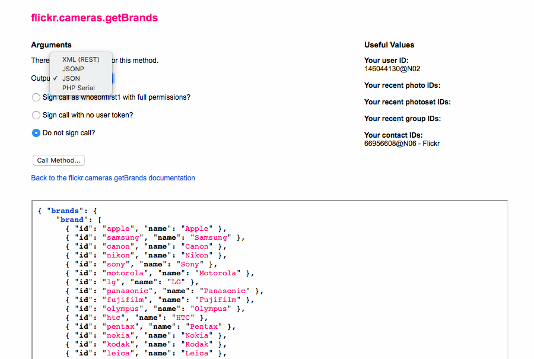
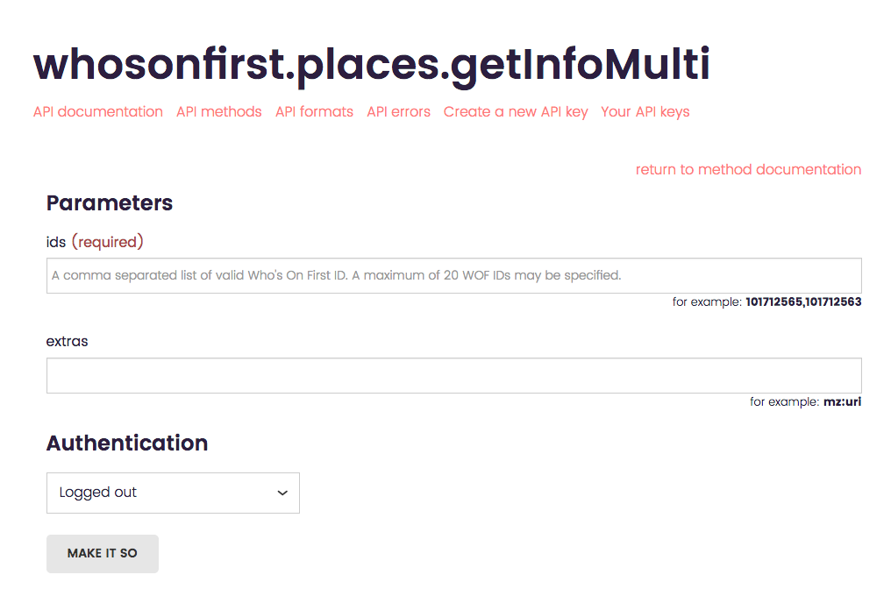
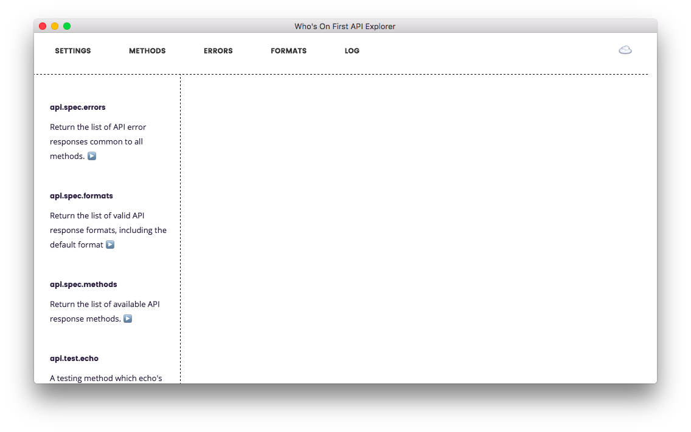
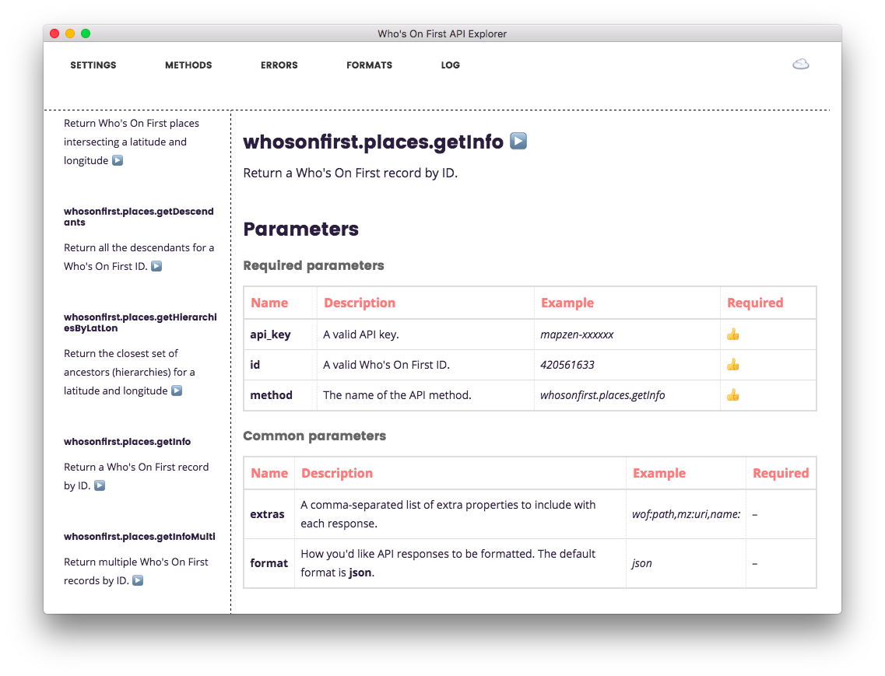
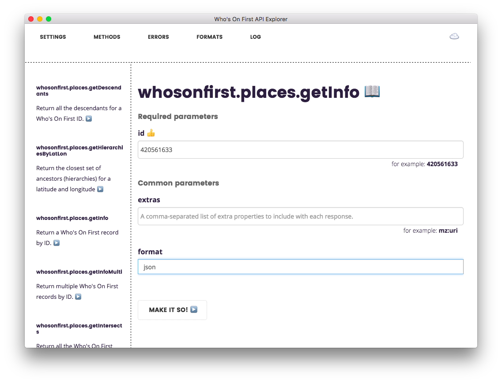
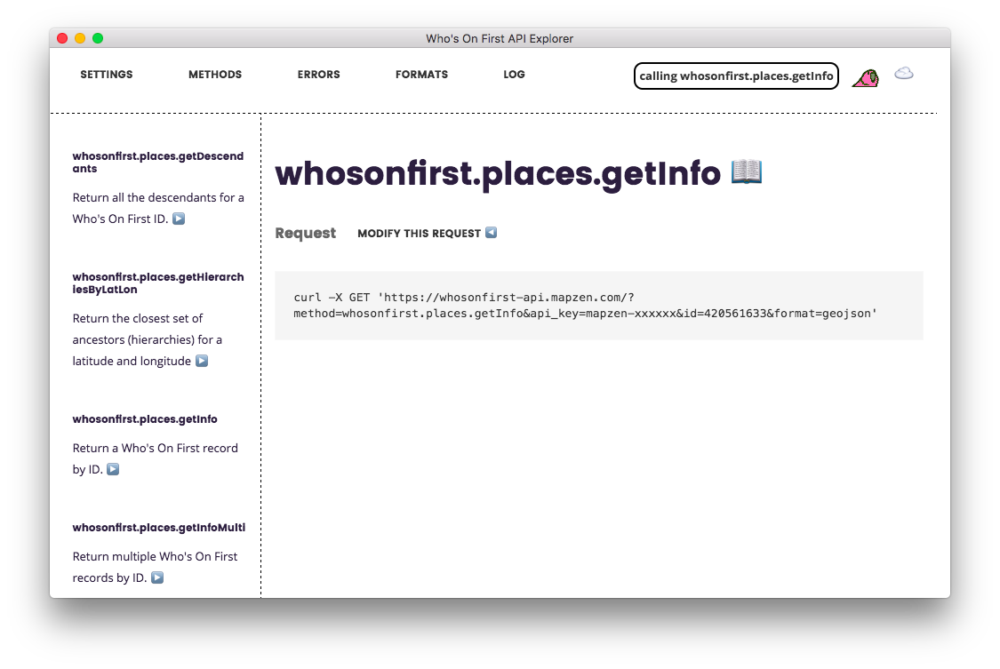
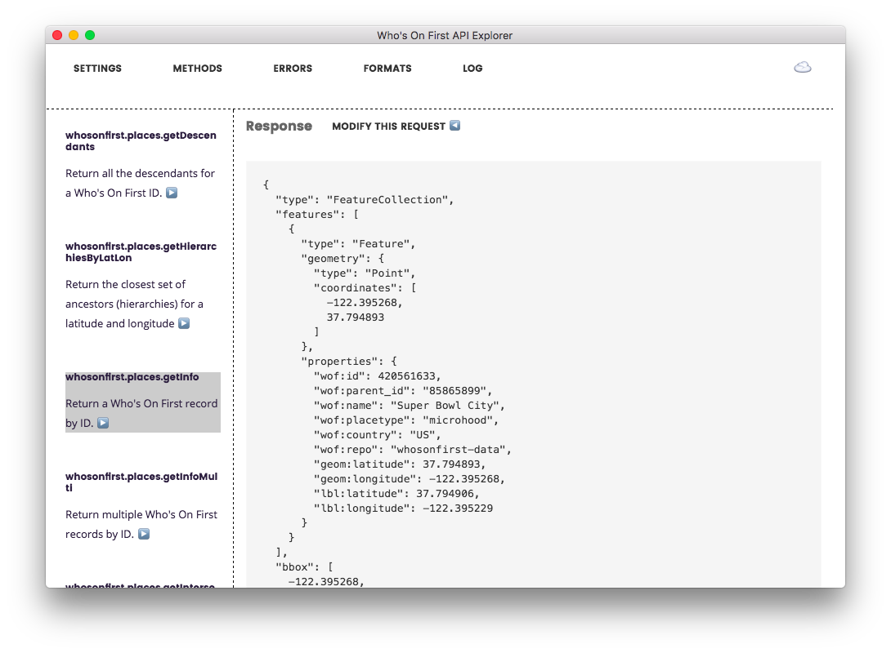
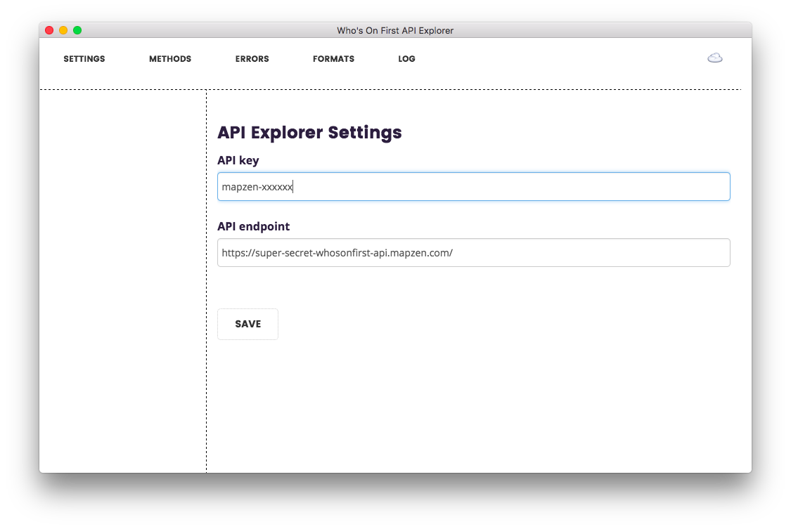
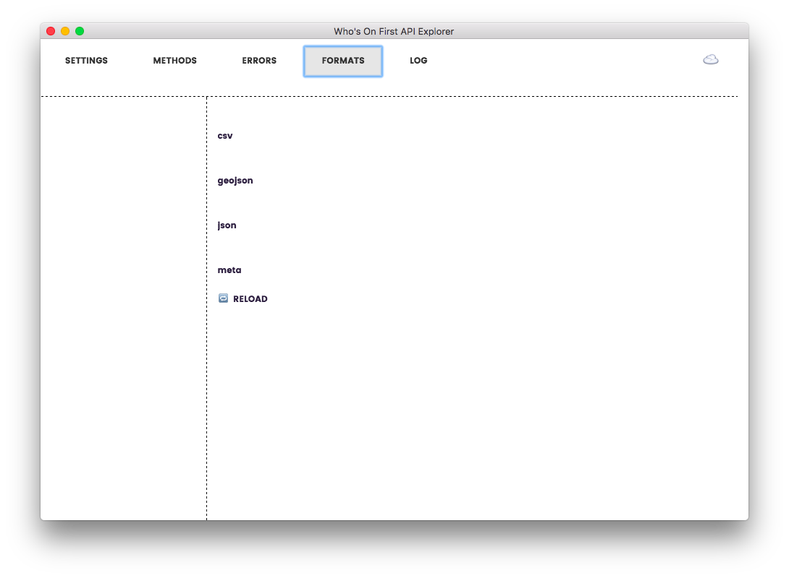
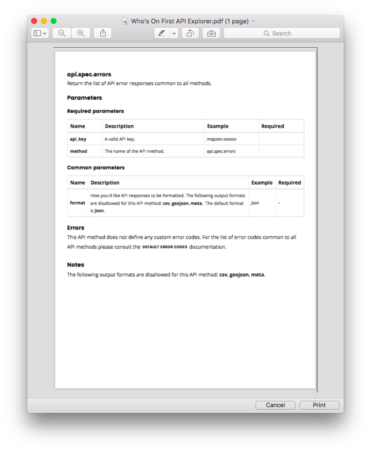

A few weeks ago Lou built an Electron application. For April Fools’ Day he made a version of Tangram Play in the style of a 90’s era Windows application and published it as a living breathing desktop application rather than the web application we’ve come to know and love. In addition he was able to publish MacOS and Linux native applications, all from the same code base. The same code base that is ultimately just HTML and CSS and Javascript (aka “a web application”). An increasing number of desktop applications are being developed this way and it’s what makes Electron pretty exciting.
Shortly after Lou’s blog post we pushed the Who’s On First API out the door. One of the features of the API is that it exposes a suite of api.spec.* methods that allow you to introspect the API itself. You can fetch all of the methods (and their parameters and errors), all of the common errors and all of the supported output formats. These methods owe a debt of inspiration to the nice people at Linode who started doing something similar way back in 2012 and from which the api.spec naming convention is derived.
The Who’s On First API has always enjoyed a internal web-based “explorer” tool. API explorers are pretty common these days but if you’re not sure they are have a look at the Flickr API Explorer which is pretty much the ur-Explorer that started them all. Go ahead, we’ll wait…

_Also, Cal Henderson’s 2007 talk “Flickr and APIs: A Love Story” which is a 22MB PowerPoint presentation because… it was 2007, I guess. Anyway, it it a good talk._
We use our own API Explorer extensively for debugging and generally poking around. It is often the fastest way to answer a question about the data. I find it difficult to imagine developing or working with APIs without an API explorer now and that makes the internal-iness of the WOF API Explorer less than awesome. For a variety of reasons it won’t be made public any time soon which is sort of like pouring salt in your own wound.

By now, some of you might have figured out where this is going: If the WOF API has a full suite of methods for inspecting the API and Electron makes it easy to develop custom applications in HTML and Javascript then why not build… a standalone Who’s On First API Explorer. So we did!
After I showed an early version to a friend he asked “Why an Electron application?” for an API explorer. Aside from the reasons outlined above I offered the following rationale:
- Curiousity. Does the Who’s On First API lend itself to an Electron application? (It does!)
- If you set aside some boring details about code-signing and paying Apple or Microsoft for the privilege, there is the possibility of generating native platform specific binaries for Electron applications. That means never having to say “Just install Node.js…” to someone. You can replace Node.js with any number of technologies and the dynamic is the same. Tools that don’t require a laundry list of extra steps to get started with are important. Not everyone is interested in the technology details because they are busy being awesome in other endeavours.
- It was (is) a good way to put the
api.specmethods through their paces. We’ve been able to identify a bunch of places where the API doesn’t return enough information to usefully build an explorer-style interface. Many have been fixed already and the rest (notably information about output formats) are slated to be improved shortly. - It allows us offer a public version of the API explorer.
- It is a good way to figure out which out the Who’s On First Javascript libraries should be rejiggered to hold hands with “modern Javascript” and Node.js – things like the mapzen.whosonfirst.api.js library which we’d like to bless as officially supported alongside the Go and Python libraries.
- It works offline because initial calls to the
api.spec.*methods are cached locally.
I like to think the WOF API Explorer is another illustration of the idea that “Mapzen should always be Consumer Zero (of Mapzen services)”. The WOF API Explorer is just one of many possible targeted and focused applications that we might build with tools like Electron and our own services.
The WOF API Explorer is available for anyone to try. As of this writing, and despite what I said above, you will still need to “Just install Node.js” to get it to work. Hopefully the time when we dig in to the details of building and signing native applications will come soon. Until then there is a little bit (possibly a lot, depending on your skill and comfort level) of preamble you’ll need to do to get the WOF API Explorer up and running.
In the interim, here are a bunch of screenshots to hopefully make that extra work seem worth doing:

Here’s what happens when you start the API Explorer for the first time: You are asked for a Mapzen API key!

List views appear in the left-hand sidebar. Here’s a list of all the API methods. API methods, errors and formats are fetched from the API when the Explorer starts up and there is a handy “refresh” button at the bottom of each list view update things while the application is running.

Here’s an example of the documentation for the whosonfirst.places.getInfo API method, which isn’t that different from what you’d see on the Mapzen website.

From any documentation page you can click through to a corresponding “explore” panel for that method. You can update the parameters that will be sent to the API and then click the handy MAKE IT SO! button to start the API request.

:partyparrot: will keep you company while your API request is being processed.
{kind=link}

Oh look, here’s a new part of the Who’s On First API: GeoJSON as an output format.

The API Explorer can also render non-JSON output formats. There is also an open ticket to enable downloading of results from the API Explorer.

Importantly the API Explorer will continue to work offline. See the way the ☁️ in the top-left corner became a 🚫 - that means the API Explorer can’t find the Internets. You won’t be able to send API requests out across the network but you can still read the documentation and construct API requests to review.

You can also change the API endpoint for making requests and by extension information about the API itself. via the api.spec methods. This probably isn’t that useful to anyone else right now but it’s very helpful for us when testing new API methods on our dev servers. Eventually we’d like to support “named” and “toggle-able” configurations in the API Explorer to make it easy to switch from one API endpoint to another.

Most of the work, in both the API and the Explorer, has been around API methods. There is still some more work to do for the other things…
There’s an an experimental and currently disabled print feature to generate print-friendly version of both API documentation and results.

Unfortunately, I can’t figure out why print versions are truncated after one “page” so we’ll turned off that functionality for now. Also apparently Emoji (specifically the 👍 signifying a required parameter) are silently dropped in the print output because… computers?
Like the API itself, the API Explorer still tilts towards beta as of this writing. There are a number of outstanding issues, most of them minor and nothing that should prevent you from using the API Explorer from… exploring the Who’s On First API.
The source code is available from https://github.com/whosonfirst/electron-whosonfirst-api-explorer and we would welcome your feedback and suggestions.
Image credits: